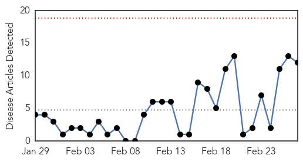

Cholera
30-Day Web Trend
0 alerts, 0 warnings

30-Day Twitter Trend
4 alerts, 0 warnings

Article Locations

Article Confidences

Top Articles:
- 0.999
- Cholera Outbreak In Malawi Causes Concern
- 0.999
- Humanitarian community must move quickly to halt cholera spread in Malawi – UN
- 0.999
- Médecins Sans Frontières (MSF) International
- 0.997
- Malawi food damage hampers bid to beat cholera
- 0.997
- Cholera outbreak in Malawi raises concerns of a large-scale spread: UNICEF
- 0.996
- Two dead as cholera outbreak threatens Malawi Flood camps
- 0.994
- U.N. official seeks international help to fight cholera in Haiti
- 0.988
- Mozambique: Cholera in Mozambique: a worrying situation
- 0.986
- U.N. official seeks international help to fight cholera in Haiti
- 0.863
- Uganda Telecom MD, Ali Amir, Resigns
- 0.763
- Over 16,000 habitations hit by water contamination: Govt
- 0.543
- Gov asked to convene water sanitation monitoring board
Top Tweets:
-
No tweets found for Feb 27, 2015
Yellow Fever
30-Day Web Trend
11 alerts, 0 warnings

30-Day Twitter Trend
0 alerts, 0 warnings

Article Locations

Article Confidences

Top Articles:
Top Tweets:
-
No tweets found for Feb 27, 2015